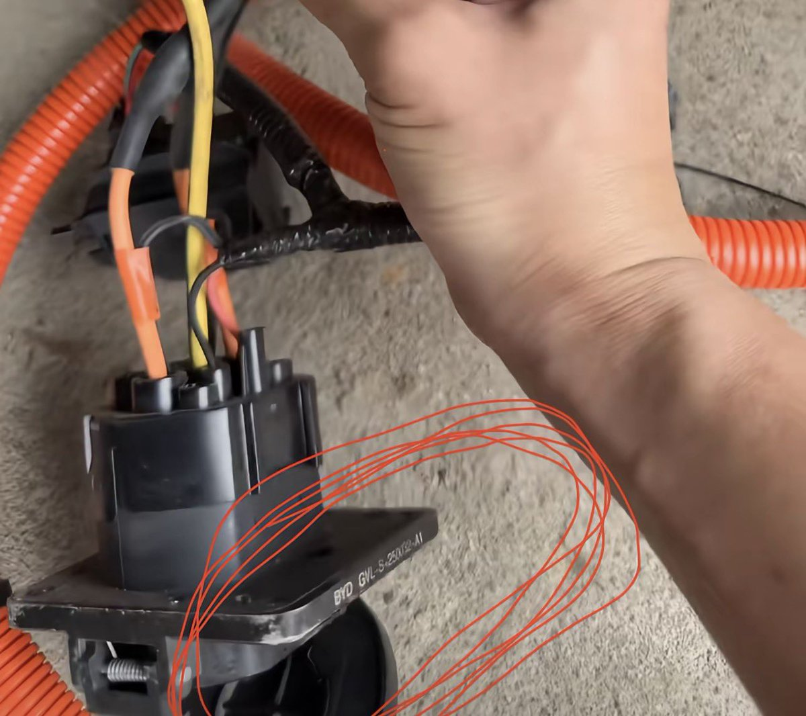

夜桜侵雪～
@Minecraftxfj
@cuichenghao 它要是镀锡铜线、镀镍铜线或者纯镍线你死🐎 👍👍👍

作家崔成浩
@cuichenghao
内地一汽车修理工吐槽称，某法务强大的汽车品牌，过了保修期充电口就坏，他剪开线束发现，里面根本不是铜线，而是铝线，快充过热极易发生火灾，而且这点铝线在4S店竟要价四五千元。该修理工感慨“车厂为了收割韭菜，有的是技术，不坑外国人，专坑自己人，良心不痛吗？” https://t.co/oBEyEHyJfc